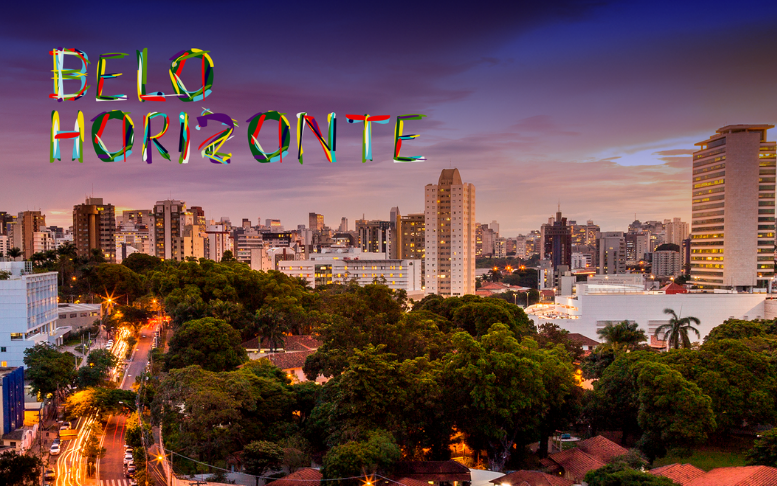

Belo Horizonte é um município brasileiro e a capital do estado de Minas Gerais. Sua população estimada é de 2.501.576 habitantes, conforme estimativas do Instituto Brasileiro de Geografia e Estatística (IBGE), sendo o 6º município mais populoso do país, o terceiro mais populoso da Região Sudeste e o mais populoso de seu estado. Com uma área de aproximadamente 331 km2, possui uma geografia diversificada, com morros e baixadas. Com uma distância de 716 quilômetros de Brasília, a capital federal, é a segunda capital de estado mais próxima da capital nacional, atrás apenas de Goiânia.
Uma cidade bastante fácil de ser explorada. Com um pouco de organização e um mapinha na mão, você conhecerá os principais pontos turísticos da capital mineira em pouco tempo. A Lagoa da Pampulha, o Circuito Cultura da Praça da Liberdade, o Parque Municipal e o Mirante do Mangabeiras são bons pontos de referência para começar a explorar as principais regiões turísticas da cidade. Sem falar no maravilhoso Instituto Inhotim, o museu de arte contemporânea a céu aberto que atrai milhares de visitantes todos os dias. Mesmo localizado a 55 km de BH, o Inhotim é imperdível! Defina as suas prioridades de visita e verifique no mapa a região onde está cada atração que você gostaria de conhecer. Assim será mais fácil economizar tempo e conhecer muito mais de BH.
Se sua dúvida é onde comer em Belo Horizonte? Fique tranquilo, pois opções não faltarão para você se alimentar bem na capital de Minas Gerais, no Brasil. Aliás, a comida mineira é mundialmente famosa e faz valer a fama com suas iguarias e seu tempero inconfundível. Como toda metrópole que se preze, em BH é possível encontrar os mais variados restaurantes, que abrangem desde a culinária local até a cozinha de outros países e regiões brasileiras. Ah e, claro, com opções para todos os bolsos.
No link abaixo iremos te apresentar alguns lugares, confira!
Escolher onde se hospedar em Belo Horizonte não será difícil. Os hotéis de BH estão bem concentrados em poucas regiões, assim como as principais atrações turísticas. Por isso, você não terá muito para onde correr. Há grande oferta de bons hotéis e os preços agradam a todos os bolsos. A cidade não costuma ficar lotada, especialmente nos finais de semana, o que torna a capital mineira uma ótima pedida para quem deseja uma viagem rápida e sem altos custos. As regiões que mais concentram hotéis em Belo Horizonte são os bairros de Lourdes, Savassi e o Centro, os três são vizinhos e se locomover entre eles é muito fácil. Algumas das principais atrações de BH estão nessa região. Outro ponto da cidade que atrai muitos visitantes é a Lagoa da Pampulha, uma das regiões mais turísticas da capital mineira. A Pampulha, apesar de receber muitos turistas, oferece poucas opções de hospedagem. A área também está mais afastada do centro. Nenhuma das regiões turísticas da cidade é atendida pelo metrô. Ele não é um bom ponto de referência para definir a melhor região para hospedagem.
Belo Horizonte é uma das capitais mais agradáveis do Brasil para se conhecer. Além de ser uma referência econômica em Minas Gerais, há muitas opções turísticas para quem pretende passar um final de semana, ou alguns dias a mais nessa cidade. Seus bares, museus, restaurantes e baladas atendem a todos os gostos e preferências!
Se Belo Horizonte ainda não está na sua lista de lugares a conhecer, que tal rever seus conceitos? Confira uma lista de razões pelas quais você deve conhecer a capital mineira:
Além desses pontos turísticos, BH é uma cidade internacionalmente notória por seus bares (veja aqui a matéria do New York Times sobre o tema). Aqui, o encontro com amigos pode ser no happy hour, mas também nos finais de semana e feriados. O encontro entre amigos é sempre regado a muita cerveja e aperitivos mineiros. Alguns dos botecos e bares mais famosos da cidade são o Tizé, no tradicional bairro de Lourdes, e o Albanos, uma das melhores casas de chopp da cidade.
Para os mais descolados, a Baiana do Acarajé e o Bomb Shell sempre movimentam muitos turistas e locais que querem aproveitar o bom clima do bairro Savassi. Mas o melhor conselho mesmo que podemos te dar é que você explore à pé os morros e esquinas de Belo Horizonte. Assim fazem os locais, em busca do boteco perfeito.
Há opções para todos os gostos em Belo Horizonte. Veja algumas dicas que podem ser ideais para seu fim de semana na cidade:
Jack Rock Bar: é o lugar perfeito para os amantes do rock. Aqui, você ouve desde Elvis, até Beatles e Led Zeppelin. A casa ainda conta com shows ao vivo em alguns dias da semana. Vale a pena conferir!
A Obra: é provavelmente o “inferninho” mais tradicional da cidade. Cada noite tem uma temática diferente (rock, brega, músicas brasileiras, rockabilly, etc.), então convém olhar a programação com alguma antecedência. Prepara-se para dançar!
Na Sala: é o lugar mais indicado para quem quer ouvir boa música eletrônica e tomar ótimos drinks. É uma das boates mais exclusivas da capital mineira.
Quando o assunto é arte e cultura, nada mais indicado do que o Circuito Cultural Liberdade. São dezenas de espaços, museus e atrações, como o Museu de Mineralogia, o Centro Cultural do Banco do Brasil, o Palácio da Liberdade, o Espaço do Conhecimento, o Museu Histórico Mineiro, entre outros. Para quem for visitar o CCBB, vale a pena conhecer um dos melhores restaurantes da cidade, o Café com Letras.
Esses são apenas alguns dos motivos pelos quais você deve conhecer Belo Horizonte.